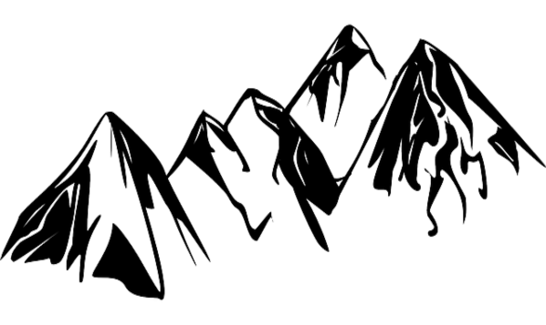
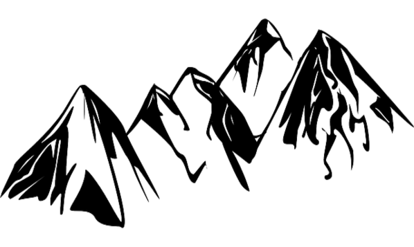

I'm Maddy
Archaeologist & Web Designer


I am a qualified Archaeologist, Anthropologist and Forensic Scientist,I have a passion for history and coffee and I love to design things on the PC.
History and the past is a facinating subject no matter which period of time one looks at, i enjoy researching the past esspecially ancient hisotry like the greeks, I enjoy putting the information I learn together for others to see. But most of all I love going on excavations.
I love to cook, and try out new things. I enjoy experimenting with new spices and different combinations to make something taste good and different.